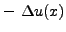
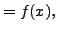
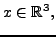
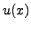
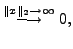

The solution of PDEs with so-called open boundary conditions plays an important role in different areas, e.g. in the simulation of molecules or in aerospace engineering. An example is the Poisson equation
|  |  for all  where | |
|  |  |
For large-scale simulations, as they are carried out e.g. in the chemical industry, a highly scalable method is needed. The parallelization of the method is not straightforward, as either an imbalance of the work occurs on some levels, or a sophisticated communication scheme is required.
In the talk the multigrid method is described, the two parallelization approaches are outlined and a comparison of the two is presented.